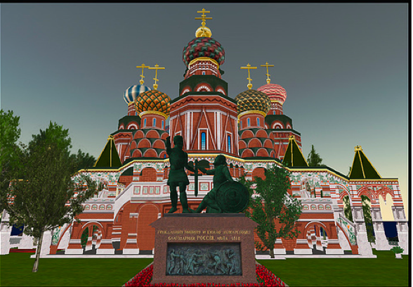

Page index / mapryal_shanghai
PowerPoint Presentation - New Technologies in Second Language
37



На Красной
площади студенты
могут встречаться
с аватарами из
России и других
стран, общаться
на русском, познакомитьпрямо
с новой культурой.
См. Русификация
SL-клиента.
Second Life создана и поддерживается
американской
компанией Linden Lab, поэтому
нет ничего удивительного
в том, что основным
языком интерфейса
клиента, используемого
для игры, является
английский. Но
есть до официальная
поддержка русского
языка русификация
и более подробнее
объяснение на
сайте Second Russia. (secondrussia.ru)